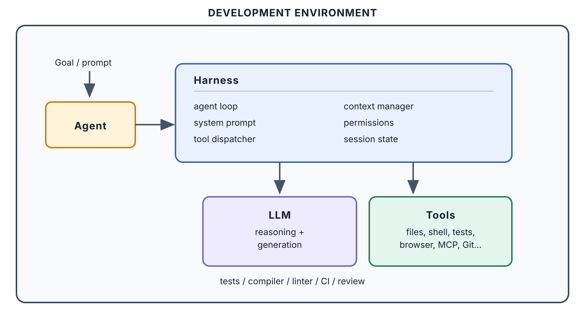
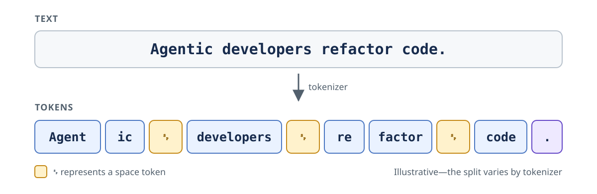
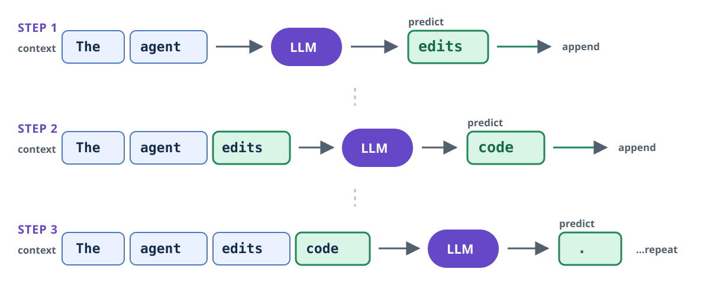
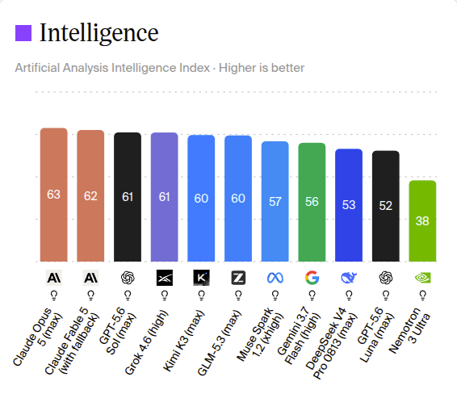
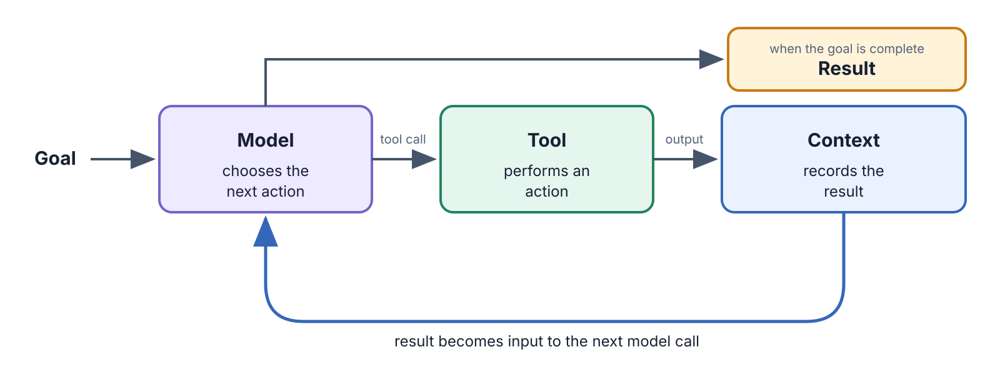
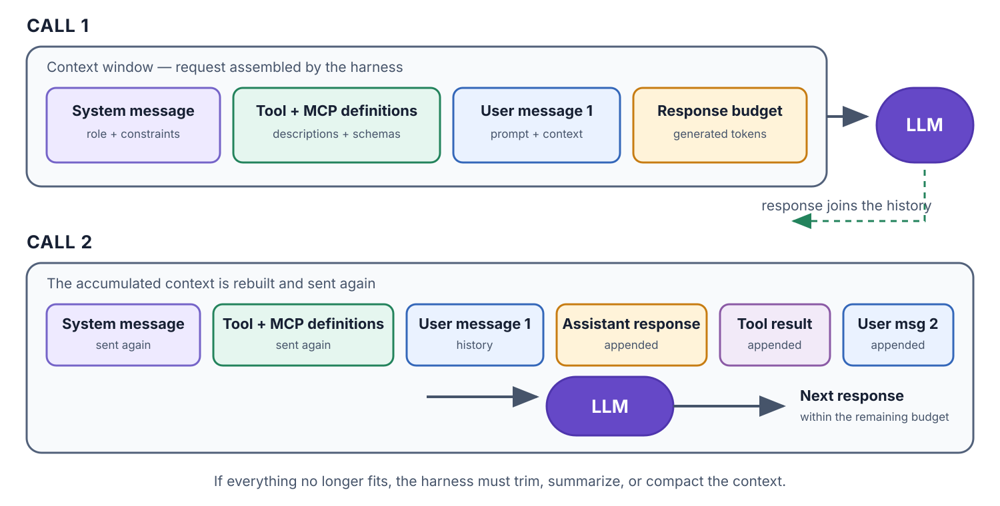

Getting Started with VS Code Copilot
Aviva Warsaw
2026-08-25
There’s a new kind of coding I call “vibe coding”, where you fully give in to the vibes, embrace exponentials, and forget that the code even exists.
– Andrej Karpathy, February 2025
| Level | Developer | AI |
|---|---|---|
| Autocomplete | Current code | Predicting the next code |
| Conversational assistance | A question + selected context | Explaining or proposing an edit |
| Agentic coding | A goal | Planning, searching, editing, running |
| Agentic engineering | A goal + engineered environment | Executing within instructions, workflows, tools, validation |

LLMs do not process text as whole sentences. A tokenizer splits it into tokens: words, parts of words, punctuation, or whitespace.

As a rough rule of thumb for English: 1 token ≈ ¾ of a word. The exact split depends on the tokenizer.
An LLM generates one token at a time. Each chosen token is appended to the context before the model predicts again.

It is repeatedly answering: “What token should come next?”
Copilot began as next-token prediction in your editor. It is essentially generative autocomplete.
Tab to acceptDemo: inline suggestions in VS Code.
The context window is the model’s working memory for a single call: the maximum number of tokens it can consider when generating the next response. It contains:
Let’s look at Session Info
Attention helps the model decide which parts of the context matter.
Lost in the middle
Being inside the context window does not guarantee being remembered.
| Small / efficient | Medium / balanced | Large / capable | |
|---|---|---|---|
| Claude Haiku 4.5 | Claude Sonnet 5 | Claude Opus 5 | |
| GPT-5.6 Luna | GPT-5.6 Terra | GPT-5.6 Sol | |
| Gemini 3.5 Flash-Lite | Gemini 3.7 Flash | Gemini 3.1 Pro1 |
Poll: which model do you use?
| Model family | Company | Country |
|---|---|---|
| Kimi | Moonshot AI | China |
| Qwen | Alibaba | China |
| DeepSeek | DeepSeek | China |
| Muse | Meta | United States |
| Grok | xAI | United States |
| Mistral | Mistral AI | France |
Copilot Auto picks the model; paid plans get 10% off.
Let’s look at Copilot model list.
The Artificial Analysis Intelligence Index is a composite benchmark for comparing language models—not a literal measure of intelligence.

Artificial Analysis Intelligence Index v4.1.1
Claude Opus 5 standard API pricing
$5 / million input tokens · $25 / million output tokens
Let’s look at the model prices
Call 1 · instructions + user₁ → assistant₁
Call 2 · previous input + assistant₁ + user₂ → assistant₂
Call 3 · previous input + assistant₂ + user₃ → assistant₃
The pattern
next input = previous input + output + next user message
The output from one call becomes input on the next. The conversation therefore grows with every turn.
Successive calls often share a stable prefix:
[cached: system prompt · instructions · earlier turns] [new message]
Only the new suffix is processed at the normal input rate.
Model choice sets the capability range. Effort controls how thoroughly that model works: reasoning, file exploration, tool use, and verification.
| Use less effort | Start with the default | Use more effort |
|---|---|---|
| Routine, well-scoped tasks | Most development work | Ambiguous tasks, subtle bugs, architecture |
If the agent skipped files, tests, or verification, raise effort. If it worked thoroughly but still could not solve the task, choose a stronger model.
Demo: audience Q&A at different effort levels
Total usage grows with context size, number of turns and parallel sessions.
An agent is an LLM given a goal, tools, and the ability to choose its next action from the results.

One request can trigger many model calls and tool actions before the agent returns a result.
A tool is a capability the model can request to inspect or change something outside the model.
The model does not execute a tool directly. It produces a structured tool call; the harness runs it and adds the tool result to the conversation.
Tool definitions are context
The name, description, and input schema of every available tool are sent to the model. The model sees the tool’s interface, while its implementation remains outside the context window.
| Tool | What it enables |
|---|---|
| File search and reading | Explore a codebase and gather evidence |
| File editing | Change code and configuration |
| Terminal and tests | Run commands and verify results |
| Browser and APIs | Interact with external systems |
Let’s look at Copilot’s tools.
An agent harness is the software that coordinates an agent session: it assembles context, calls the model, executes tool calls, and manages state and permissions.

The harness rebuilds and sends the accumulated context on every call. New user, assistant, and tool-result messages are appended for the next call—the model does not remember them unless they are sent again.
Let’s look at Developer: Show Chat Debug View
| Harness | Company / creator | Original differentiator |
|---|---|---|
| GitHub Copilot | GitHub | Inline code completion in the IDE |
| Claude Code | Anthropic | Terminal-first coding agent |
| Codex | OpenAI | Local CLI and isolated cloud tasks |
| Cursor Agent | Anysphere | Agent inside an AI-native editor |
| Pi | Mario Zechner | Minimal, deeply extensible terminal harness |
| OpenCode | Anomaly | Open-source, provider-agnostic agent |
Harness ≠ model. Several harnesses can run models from multiple providers.
| Phase | Responsibility |
|---|---|
| 1. Explore | Understand the codebase and conventions. |
| 2. Plan | Define the steps and success criteria. |
| 3. Code | Implement, test, and adjust. |
| 4. Commit | Review, verify, and commit. |
Demo: Plan mode in Agents Window
The execution environment is where the harness reads files, runs tools, and applies changes. It is a separate choice from the harness and the model.
| Environment | How it works | Best suited to |
|---|---|---|
| Local | Works directly in your current checkout | Interactive tasks with immediate feedback |
| Worktree | Uses a separate Git checkout and branch on your machine | Isolated or parallel tasks without disturbing your workspace |
| Cloud | Runs in a remote, isolated environment and returns a branch or change for review | Delegated tasks that can continue independently |
Demo: Worktree in Agents Window
Instructions give the agent persistent context it should follow without repeating it in every prompt.
| File | Purpose |
|---|---|
.github/copilot-instructions.md |
Repository-wide guidance for GitHub Copilot |
AGENTS.md |
Portable agent guidance; nest files to specialize instructions for parts of a repository |
CLAUDE.md |
The native project-instructions file for Claude Code |
Let’s look at available instructions
Include what the agent cannot reliably infer from the code:
Type /init in VS Code Copilot Chat to generate a starting point—then review, trim, and commit it with the codebase.
Demo: Instructions with /init or /create-instruction
Use .github/instructions/NAME.instructions.md when guidance should apply only to particular files or directories.
How it works
.instructions.md.applyTo to a glob such as **/*.py; separate multiple patterns with commas.When to use it
Skills package specialized knowledge and repeatable workflows so agents can perform particular tasks consistently.
An open, portable standard
Skills can be versioned with the codebase and reused across compatible agent products.
Progressive disclosure
SKILL.md when the task matches.This keeps many skills available without filling the agent’s context window.
Let’s look at available skills.
Source: Agent Skills — Overview
A subagent is an isolated agent with its own context window. It receives a focused task and returns the relevant result to the main conversation.
Delegate when the work benefits from:
Keep it with the main agent when:
Demo: audience Q&A with 2 subagents.
Hooks run deterministic automation at specific points in the agent lifecycle. Unlike instructions, they do not depend on the model remembering to act.
| Lifecycle event | Example use |
|---|---|
SessionStart / UserPromptSubmit |
Initialize resources or add context |
PreToolUse |
Inspect or block a risky command before it runs |
PostToolUse |
Format changed files, run checks, or record an audit trail |
Stop |
Verify the result, clean up, or generate a report |
Workspace hooks live in .github/hooks/*.json. VS Code passes event data to the command as JSON on stdin; the command can return JSON on stdout to add context or influence what happens next.
MCP is an open-source standard for connecting AI applications to external systems.
Jira — read the task
Read
PAY-123, summarize the acceptance criteria, then propose an implementation plan.
Azure DevOps — create the PR
Prepare a draft PR for
PAY-123. Ask me to confirm before creating it.
The idea → ship spine: each skill’s output becomes the next skill’s input.
| Step | Skill | Outcome |
|---|---|---|
| 1 | /grill-with-docs |
Interview the developer; record the decisions. |
| 2 | /to-spec |
Turn the agreed conversation into a written spec. |
| 3 | /to-tickets |
Split the spec into small, agent-buildable tickets. |
| 4 | /implement |
Build the tickets with a test-first workflow. |
| 5 | /code-review |
Review the diff against the spec and project standards. |
Recommend courses:
Prompt engineering still matters, but agentic development requires context engineering.
AGENTS.md/tdd skill/grill-with-docs or /grilling./to-tickets.